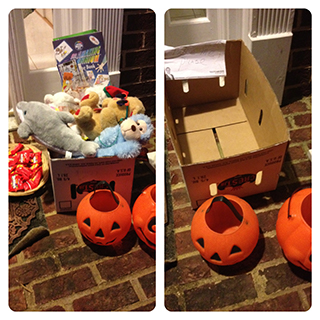
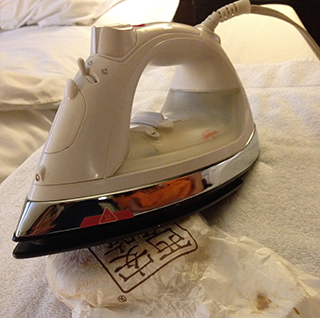
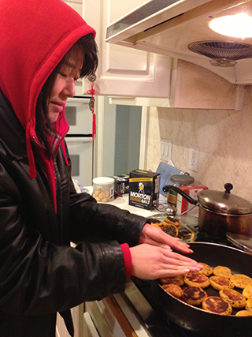

Challenge: turn on a song and try to finish showering before the song's over. If you think you take short showers, include the time it takes for the water to warm up. I'm currently hovering around songs that are 3:45 and 4 minutes.
Need more time for your showers? Turn off the water while you shampoo/soap etc. But it'll get cold? Then shampoo faster or close the door and trap the water vapor in the bathroom.
What's better than having kids literally show up at your door to take your junk away? I've done this 2 years in a row now, and surprised by how much they love it. The first year, as he was running up my driveway, I heard one kid shout, "I heard one house was giving out toys! Come on! Don't you want toys?!"
Why not donate it? Most donation centers won't take stuffed animals and based on what I've seen at the PTA, who knows when or if your toys will get set out.
Err how you'll save money: You won't have to buy as much candy?
If your stuffed animals aren't in good condition, I've heard they make good chew toys for pets.
I don't know how I just realized this, but my friend Michelle pointed out that you don't need to use a full body length towel to dry yourself off if you've got a door to your bathroom. Smaller towel = more space for clothes when you do laundry => fewer laundry loads. I've been using an 11x32" towel ever since. (Yea, weird dimensions, right? Can't complain when it was free though lol.)
If the nose piece breaks, bend a paper clip and replace it...it will last a lonngg time. This picture is from when I first replaced it...the paper clip has not needed replacing despite regular swimming.
If the strap breaks, get one of those bungee cords-they're cheaper and have a longer life.
Foam roll. Better yet, use a tennis/lax/baseball and get the knots out of your shoulder blades, quads, glutes, hamstrings, calves, arms. Life saver if you run a lot and get tight knees/hip flexors–foam roll your IT bands! The tighter you are, the more it'll hurt, but it'll feel better later.
If you're traveling and don't like cold food, take advantage of that iron in your hotel room. If your hotel doesn't have an iron, you need a better hotel or stay with friends.
Wear more clothes in the winter. Stand by the fire when somebody's cooking. This picture might make you think I'm kidding. I'm not. I'm currently wearing a ski jacket as I type this.
Everything = lectures, podcasts, interviews, etc. Uh this saves you money because time is money? I actually just don't understand how people listen to slow things.
Ok, so I actually used money to clickbait you; I just want people to waste less stuff.
{kind=link}
{kind=link}
{kind=link}
{kind=link}